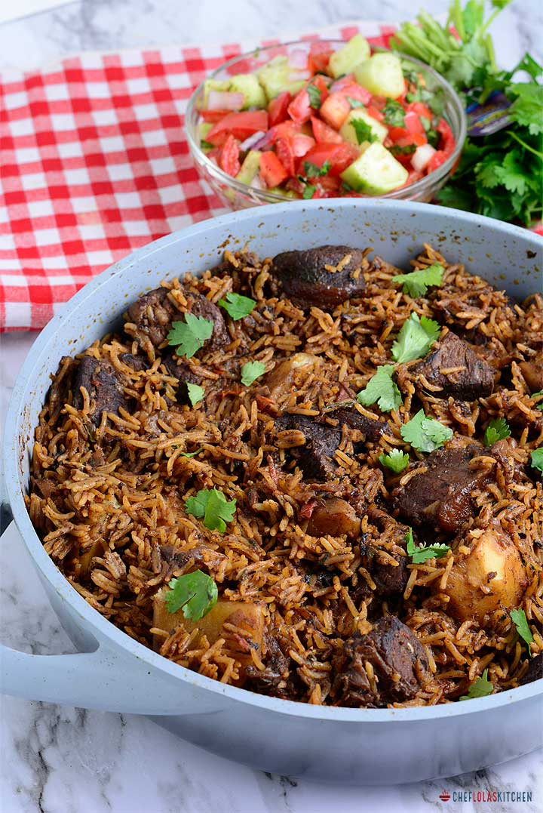

My Recipes

Pilau with Beef Stew
- 2 cups rice
- 1/2 kg beef (cubed)
- Spices: pilau masala, garlic, ginger
- Onions, tomatoes, cooking oil
Cook beef with spices, sauté onions till golden, add rice and water, and let it simmer. Serve with stew.

Pasta with Beef Stew
- 2 cups pasta
- 1/2 kg beef
- Garlic, onions, tomato paste
- Salt, pepper, spices
Boil pasta until tender. Prepare beef stew with garlic, onions, and tomatoes. Serve hot together.